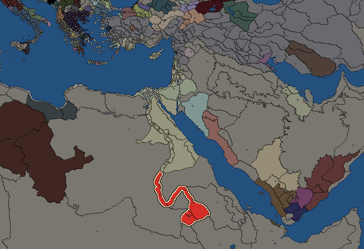
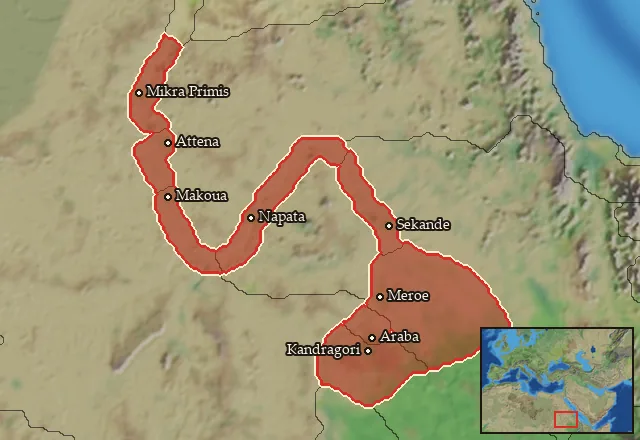

RTR: Imperium Surrectum
RTR: Imperium SurrectumKush


- difficulty Difficult
- Ethiopian culture
- believes
 Ethiopian
Ethiopian - 8 settlements
- capital Meroe
- 21,300 manpower
- 4 characters
- 11 faction units
- 437 regional units
The campaign brief
"‘The King of the Ethiopians advises the King of the Persians to bring overwhelming odds to attack the long-lived Ethiopians when the Persians can draw a bow of this length as easily as I do; but until then, to thank the gods who do not incite the sons of the Ethiopians to add other land to their own.’ […] But before [Kambyses'] army had accomplished the fifth part of their journey they had come to an end of all there was in the way of provision, and after the food was gone, they ate the beasts of burden until there was none of these left either. Now had Kambyses, when he perceived this, changed his mind and led his army back again, he would have been a wise man at last after his first fault; but as it was, he went ever forward, taking account of nothing. While his soldiers could get anything from the earth, they kept themselves alive by eating grass; but when they came to the sandy desert, some did a terrible thing, taking by lot one man out of ten and eating him. Hearing this, Kambyses feared their becoming cannibals, and so gave up his expedition against the Ethiopians and marched back to Thebes, with the loss of many of his army; from Thebes he came down to Memphis, and sent the Greeks to sail away” – (Hdt. III, 21, 3; 25, 4-7).
Greetings, stranger! You must have travelled far to reach our lands. Not many of your kind survive the long journey. A great number in the past failed to do so. Yes, I’ve heard the stories you tell about us. Even the Great Persians, who your forefathers admired, tried to set foot onto our lands. Their bones have long since been scraped clean by the desert winds. Failing to touch, no, even to approach the long-lived and ever living Kushites, uncorrupted by the decadence of the North. I guess, then, it is not Persians we have to worry about in our own days. The treacherous Greeks, however, who even dare to style themselves as Pharaohs, enslaved the true Egyptians, forcing them up the mighty Nile to fight us! Us, who are more kin to them, than to these perfidious Greeks! It’s a disgrace!
We tried to approach them. To befriend them. Years of turmoil and a dynastic change has made our King Arakamani into a great leader, well-read on your Greek books and philosophy, and well-informed in the ways of combat. He put an end to the corrupt intrigues of the priests, unified the uncountable settled and nomadic tribes of Kush and Nubia around the magnificent city of Meroe, and sought trade and friendship with the Greeks downstream. And how did they greet us? With hostility and warfare. The oh-so-glorious sibling-lover Ptolemy, intoxicated by his greed for gold and power, dyed the sands of Nubia red with the blood of our kin, took the Dodekaschoinos, and cut us off from much of the vast lands to the north!
We will not accept this any longer. The corrupt Greek slavers will not trample over us anymore. We will take back what is rightfully ours, and drive the invaders back into the sea! We will show them the true immortality of our people, the rage and destructiveness of a desert wind travelling north, grinding down their supposed superiority. Nothing hardens men as the harshness of the desert, and none are as powerful as those who thrive in it. Take up your arms, stranger. It is time to fight back!
Starting settlements
Kush begins with 8 settlements and 21,300 manpower.
| Settlement | Region | Size | Manpower | Already built | Settlement | Region | Size | Manpower | Already built |
|---|---|---|---|---|---|---|---|---|---|
| Meroe (capital) | Medwi | large town | 6,000 | 13 buildings | Napata | Napa | city | 3,000 | 12 buildings |
| Sekande | Sirtibis | town | 1,600 | 5 buildings | Mikra Primis | Pedeme | large town | 2,100 | 9 buildings |
| Attena | Euonymitaia | town | 1,800 | 5 buildings | Makoua | Notia Euonymitaia | large town | 2,000 | 10 buildings |
| Araba | Aborepi | town | 2,000 | 5 buildings | Kandragori | Notia Meroitis | large town | 2,800 | 12 buildings |
What is already built in each settlement
Meroe, in Medwi: Small Treasury, Governor's Villa, Wooden Palisade, Homeland, Cisterns (Sanitation), Region Information Scroll, Roads, Basin Irrigation (Crops), Local Market, Basic Armoury, Mines (Industry), Shrine, Date Palm Plantation (Rural)
Napata, in Napa: Large Colony, Governor's Palace, Small Stone Wall, Homeland, Sewers (Sanitation), Region Information Scroll, Paved Roads, Basin Irrigation (Crops), Local Market, Basic Armoury, Temple, Mines (Industry)
Sekande, in Sirtibis: Small Colony, Governor's House, Homeland, Region Information Scroll, Local Barter
Mikra Primis, in Pedeme: Large Colony, Governor's Villa, Wooden Palisade, Homeland, Cisterns (Sanitation), Region Information Scroll, Training Grounds, Nomad Communal Herding (Husbandry), Shrine
Attena, in Euonymitaia: Small Colony, Governor's House, Homeland, Region Information Scroll, Local Barter
Makoua, in Notia Euonymitaia: Large Colony, Governor's Villa, Wooden Palisade, Homeland, Cisterns (Sanitation), Region Information Scroll, Roads, Irrigation Ditches (Crops), Training Grounds, Shrine
Araba, in Aborepi: Governor's House, Homeland, Region Information Scroll, Irrigation Ditches (Crops), Local Barter
Kandragori, in Notia Meroitis: Governor's Villa, Wooden Palisade, Homeland, Cisterns (Sanitation), Region Information Scroll, Roads, Irrigation Ditches (Crops), Local Market, Training Grounds, Shrine, Herb gatherer (Urban), Horse Trainer (Rural)
Starting diplomacy
At war with (1):  Ptolemaic Empire
Ptolemaic Empire
Like every faction, it is also at war with the  Free Peoples, who hold every settlement no faction does.
Free Peoples, who hold every settlement no faction does.
Homeland
Kush's homeland is 8 regions. Only there can it install the Homeland government (more on homelands).

Aborepi · Euonymitaia · Medwi · Napa · Notia Euonymitaia · Notia Meroitis · Pedeme · Sirtibis
Starting characters
| Name | Role | Age | Name | Role | Age | Name | Role | Age | Name | Role | Age |
|---|---|---|---|---|---|---|---|---|---|---|---|
| Arakamani | General | 50 | Kash | General | 30 | Piankhi-yerike-qa | General | 45 | Amanisio | General | 22 |
Reforms
Open to every faction: Military innovations have arrived!, Second wave of military innovations have arrived!.
Units you can recruit
The same as in the main campaign.